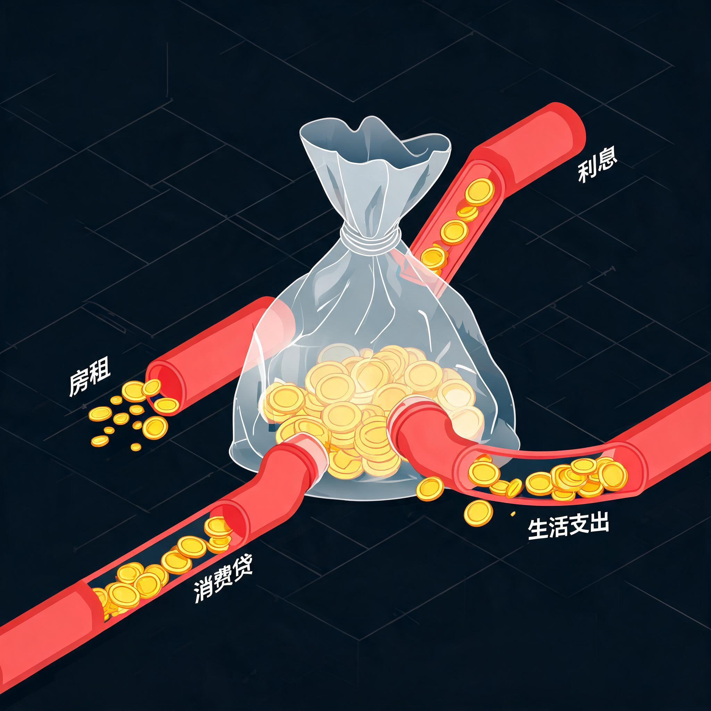

同样的月薪，有启动资本的人 vs 没有启动资本的人
20 年后净资产差距到底有多大？

现象有启动资本的人净资产是底层的 —。两人月薪一模一样，运气一模一样，差距完全来自是否拥有可升值的资产。
机制 1底层每月把 — 的收入交给房东。这笔钱不仅不能积累，还在反向给资产持有者加杠杆——租金就是资产收益的现金流。
机制 2遇到一次医疗/失业/家庭冲击，底层只能借年化 — 的高息贷。利息越滚越大，下次再有冲击就更没有抵御能力。
机制 3富人的资产以年化 — 复利增长，工资只是零花钱。底层的"努力"完全跑不赢这条复利曲线。
结论所谓"原始资本积累"，本质是从 0 跨到 C₀ 的那一步。一旦跨过去，C₀ 自己会增长；没跨过去，工资再高也只是被结构性抽水的输入端。